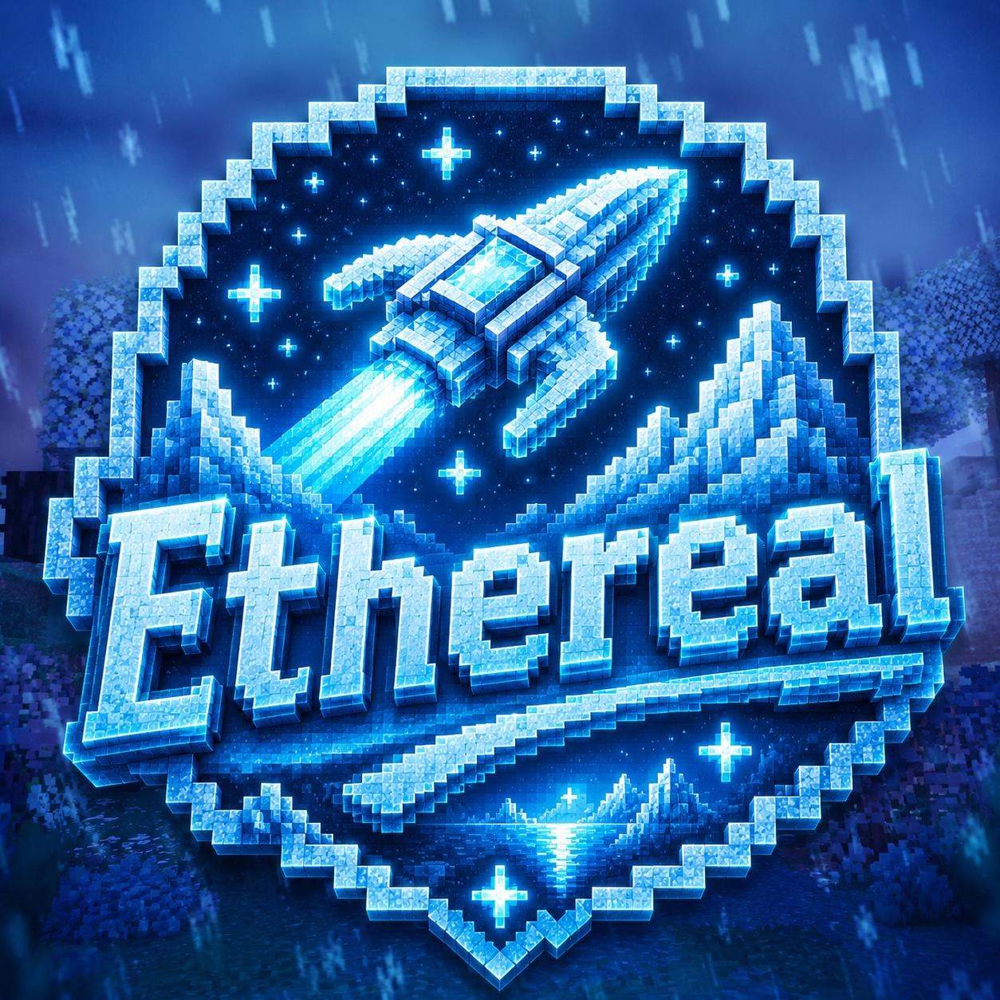

What is Glacia?
Glacia is the first EtherealPE realm: an ice planet factions experience with PvE bosses, custom items, economy progression, voting rewards, and Java + Bedrock support.

EtherealPE Access NodeThis preview is locked to trusted staff. Enter the access phrase to continue.
Awaiting signal...
A dark cosmic Minecraft network built for Java and Bedrock. Explore Glacia, an ice planet realm with factions, bosses, custom gear, pets, runes, rings, and seasonal progression.
EtherealPE is planned as a network of realms. Glacia is the first revealed world.
Pick your platform. Bedrock has a quick add button, but manual IP and port are always shown too.
Open Multiplayer, add a server, then paste the address below.
Add an external server with this address and port.
Vote on each site to support EtherealPE and earn launch rewards.
Glacia is the first EtherealPE realm: an ice planet factions experience with PvE bosses, custom items, economy progression, voting rewards, and Java + Bedrock support.